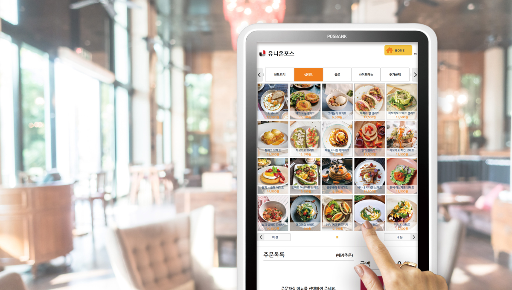

신선한 식자재부터 든든한 주방 필수품까지.사장님의 매일을 채우는 장보기를 만나보세요.
매일의 메뉴를 위한 유니온상회의 추천 셀렉션
식당도, 분식집도, 배달 전문점도.메뉴에 맞춰 더 쉽게 찾아보세요.
주방의 기본이 되는 신선농산
회전이 빠른 메뉴를 위한 식재료
메뉴의 중심을 잡아주는 면류
식재료를 메뉴로 잇는 활용 아이디어
키오스크와 식자재 서비스의 연결 제안
